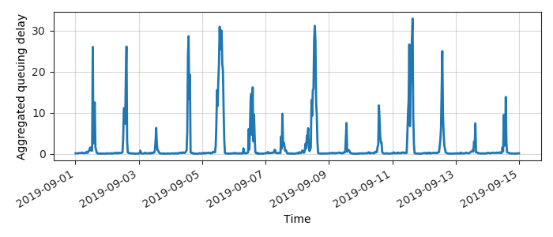
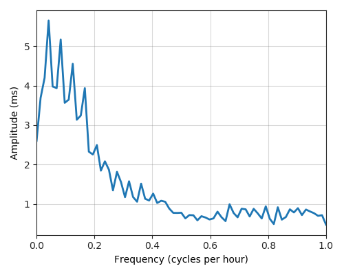
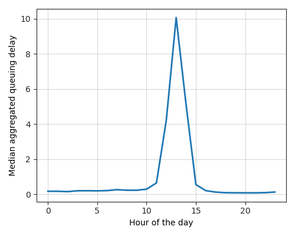

---
layout: default
title: Last-mile delay survey / 2019-09-01 / AS2497
---
AS2497, IIJ Internet Initiative Japan Inc., JP
Summary
- Daily last-mile fluctuations: severe
- Number of probes: 6
- APNIC eyeball rank: 303
- Daily fluctuations: True
- Main frequency: 0.0417
- Average peak-to-peak amplitude: 5.65ms
Aggregated last-mile queuing delay

Periodogram

24H profile

Probes' last-mile RTT